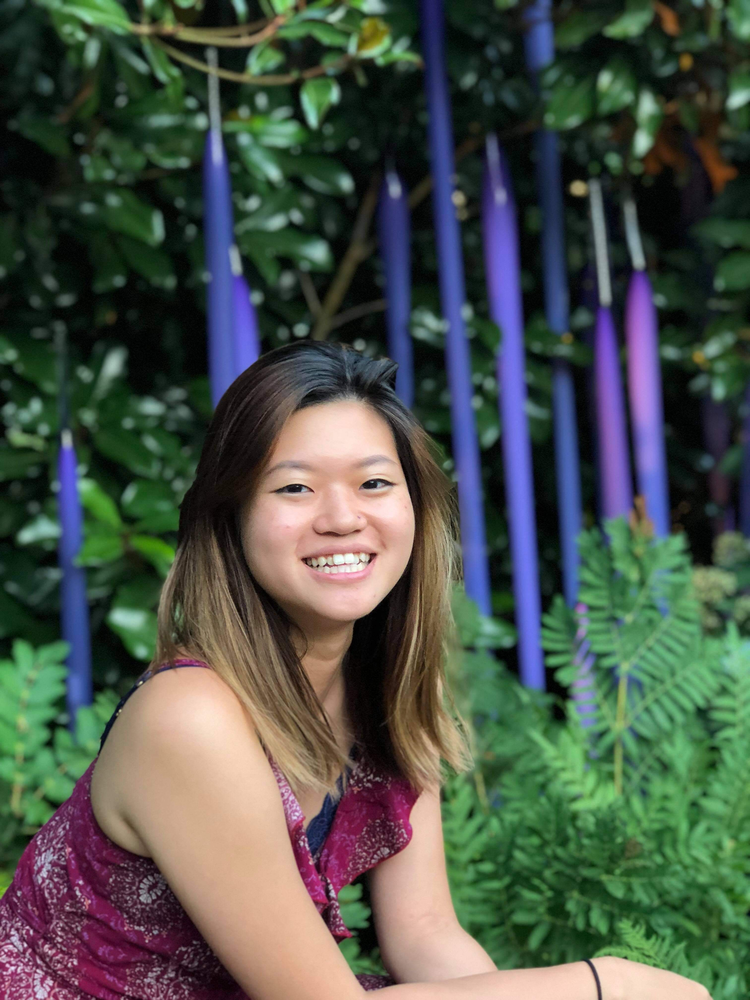

About me.
I am a self-taught web developer and designer who loves pastel colors and making cute things. In 2020, I was working in the food industry until I finally accepted it wasn’t my calling. As a manager, I learned that I love problem-solving and design so I learned how to code.